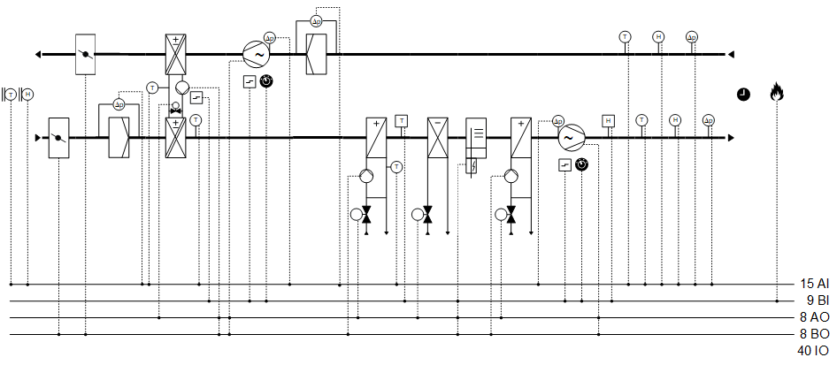
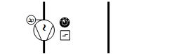
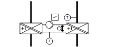
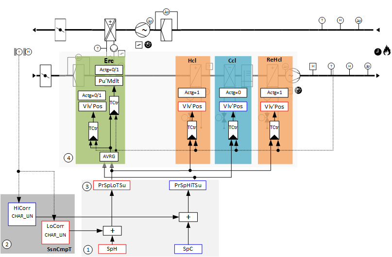
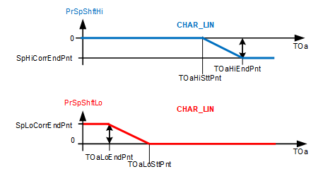
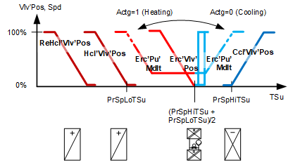

[Ahu24] Air handling unit, supply air temperature and supply air humidity control, pressure control
Plant example Ahu24 has speed-controlled fans, chilled water cooling coil, hot water heating coil, hot water reheating coil, energy recovery with a run-around coil, humidifier and shutoff dampers.
Functions
- Supply air temperature control
- Supply air humidity control
- Pressure control
Plant diagram

Components
- Fans, speed-controlled
- Shutoff dampers
- Energy recovery with run-around coil
- Hot water heating coil
- Chilled water cooling coil
- Hot water reheating coil
- Humidifier
Components and functions
Components and functions of the plant example:
Component | Function | BACnet object |
|---|---|---|
| Fire detection contact Switches the plant to: Off | [BI] Fire detection contact |
| Manual operating mode selection Switches the plant to: Auto | Off | On | [MCnfVal] Manual operating mode selection |
| Scheduler program Switches the plant to: Off | On | [MSchedule] Scheduler |
| Present operating mode Reports the present operating mode: Off | On | [MCalcVal] Present operating mode |
| Reason for present operating mode Reports the reason for the present operating mode: Exception | Operating mode switch | Manual operating mode selection | Scheduler | Switching action operating | [MCalcVal] Reason for present operating mode |
| Temperature control basic setpoints (1) Setpoints for upper (cooling setpoint) and lower (heating setpoint) extract air temperature See function diagram for temperature control basic setpoints (1). | [ACnfVal] Setpoint for cooling [ACnfVal] Setpoint for heating |
| Seasonal temperature compensation (2) Corrects the high and low extract air temperature setpoint per the outside temperature. See function diagram for seasonal temperature compensation (2). | [BCalcVal] Seasonal temperature compensation > [ACalcVal] Present setpoint high for supply air temperature > [ACalcVal] Present setpoint low for supply air temperature |
| Humidity control basic setpoints (1) Setpoints for upper (dehumidification setpoint) and lower (humidification setpoint) supply air humidity | > [ACnfVal] Setpoint for dehumidification > [ACnfVal] Setpoint for humidification |
| Exhaust air differential pressure sensor Measures the differential pressure between duct and environment. | [AI] Extract air pressure (Located in |
Monitor negative pressure At too low a pressure, switches the plant to: Off |
| |
Flow monitoring extract air The plant is switched to off if the differential pressure does not build after switching on the fan. Monitors the dampers and the fan. | > [BCalcVal] Flow monitoring | |
| Supply air differential pressure sensor Measures the differential pressure between duct and environment. | > [AI] Supply air pressure (Located in |
Monitor positive pressure At too high a pressure, switches the plant to: Off |
| |
Flow monitoring supply air The plant is switched to off if the differential pressure does not build after switching on the fan. Monitors the dampers and the fan. | > [BCalcVal] Flow monitoring | |
| Extract air temperature sensor Measures extract air temperature. | > [AI] Extract air temperature |
| Extract air humidity sensor Measures the extract air humidity. | > [AI] Extract air humidity |
| Supply air temperature sensor Measures the supply air temperature. | > [AI] Supply air temperature |
| Supply air humidity sensor Measures supply air humidity. | > [AI] Supply air humidity |
| Humidity detector Limits the maximum relative supply air humidity. | > [BI] Humidity detector (Located in |
| Supply air fan |
|
Pressure controller Controls the supply air pressure. See function diagram for supply air pressure control. | > [Controller] Pressure controller
| |
Supply air pressure setpoint Determines the setpoint for supply air pressure. | > [ACnfVal] Setpoint supply air pressure
| |
Command Switches on/off the fan as needed. | > [BO] Command | |
Speed Controls the fan speed between 0 and 100 [%]. | > [AO] Speed | |
Maintenance switch Switches off the fan and the plant. The fan outputs are blocked locally at a high priority (Prio 2). | > [BI] Maintenance switch | |
Fault message Fault messages, e.g. from the external motor control (variable speed drives). Switches off the fan and the plant. | > [BI] Fault | |
Volume flow calculation Measures and calculates the volume flow. |
| |
Differential pressure sensor for volume flow calculation Measures the differential pressure at one of the measuring points prepared on the fan for the volume flow measurement. | > [AI] Differential pressure for air volume flow calculation | |
Displays the volume flow. | > [ACalcVal] Air volume flow | |
| Reheating coil |
|
Reports hot water demand to heat distribution. | > [BCalcVal] Hot water demand | |
Pump |
| |
Pump command Switches on/off the pump as needed. | > [BO] Command | |
Pump run when the outside air temperature is low Pump always operates at low outside temperatures (frost protection). |
| |
Kick function (pump kick) Prevents the pump from seizing during long idle periods. |
| |
Valve |
| |
Temperature controller Controls the supply air temperature. See function diagram for supply air temperature control. | > [Controller] Temperature controller | |
Valve position Controls the valve position: 0...100 [%] | > [AO] Position | |
| Humidifier |
|
Humidity controller Controls supply air humidity (humidification). | > [Controller] Humidity controller | |
Command Switches on/off the humidifier as needed. | > [BO] Command | |
Control Controls the humidifier: 0 and 100 [%] | > [AO] Modulating | |
Fault message Reports fault messages of the external humidifier fault. | > [BI] Fault | |
| Cooling coil |
|
Reports chilled water demand to cooling distribution. | > [BCalcVal] Chilled water demand | |
Valve |
| |
Temperature controller Controls the supply air temperature. See function diagram for supply air temperature control. | > [Controller] Temperature controller | |
Humidity controller Controls supply air humidity (dehumidification). See function diagram humidity control. | > [Controller] Humidity controller | |
Valve position Controls the valve position: 0...100 [%] | > [AO] Position | |
| Heating coil |
|
Reports hot water demand to heat distribution. | > [BCalcVal] Hot water demand | |
Frost protection Prevents the hot water heating coil from freezing. The frost protection controller opens the valve (modulated) at a declining return temperature, e.g. below 10 [°C]. If the frost protection monitor triggers:
| > [BI] Frost protection monitor > [Controller] Frost protection controller | |
Purge optimization Purges the heating coil with hot water at cold outside temperature prior to switching on fans. Duration and valve opening are optimized using function [PURGE] Purge optimization. | > [BCalcVal] Startup purge active | |
Return temperature sensor Measures the return temperature. The last purge optimization is prematurely canceled when exceeding a specific limit value, e.g. 30 [°C] during purge optimization. Supports frost protection. The reaction is the same as the one initiated for triggering the frost protection monitor, when dropping below a specific limit value, e.g. 4 [°C]. | > [AI] Return temperature | |
Pump |
| |
Pump command Switches on/off the pump as needed. | > [BO] Command | |
Pump run when the outside air temperature is low Pump always operates at low outside temperatures (frost protection). |
| |
Kick function (pump kick) Prevents the pump from seizing during long idle periods. |
| |
Valve |
| |
Temperature controller Controls the supply air temperature. See function diagram for supply air temperature control. | > [Controller] Temperature controller | |
Valve position Controls the valve position: 0...100 [%] | > [AO] Position | |
| Extract air filter |
|
Maintenance message after reaching the limit value for differential pressure. This requires a volume flow measurement. The present maintenance limits are derived from the smaller of the two values:
Number 1 is the determinative value at average and large volume flows. Number 2 is the determinative value at smaller volume flows. | > [AI] Differential pressure > [ACalcVal] Present maintenance limit > [BCalcVal] Maintenance indication > [ACnfVal] Maintenance limit offset > [ACnfVal] Maintenance limit factor | |
 | Extract air fan |
|
Pressure controller Controls extract air pressure. See function diagram for extract air pressure control. | > [Controller Pressure controller
| |
Setpoint extract air pressure Determines the extract air pressure setpoint. | > [ACnfVal] Setpoint extract air pressure
| |
Command Switches on/off the fan as needed. | > [BO] Command | |
Speed Controls the fan speed between 0 and 100 [%]. | > [AO] Speed | |
Maintenance switch Switches off the fan and the plant. The fan outputs are blocked locally at a high priority (Prio 2). | > [BI] Maintenance switch | |
Fault message Fault messages, e.g. from the external motor control (variable speed drives). Switches off the fan and the plant. | > [BI] Fault | |
Volume flow calculation Measures and calculates the volume flow. |
| |
Differential pressure sensor for volume flow calculation Measures the differential pressure at one of the measuring points prepared on the fan for the volume flow measurement. | > [AI] Differential pressure for air volume flow calculation | |
Displays the volume flow. | > [ACalcVal] Air volume flow | |
 | Energy recovery (Run-around coil system) Reuses sensible energy from extract air for supply air by transferring heat. Heating/cooling changeover: Determines whether it can be heated or cooled using extract air:
|
|
Icing protection The temperature sensor measures the glycol temperature after energy recovery. The anti-icing protection controller holds the glycol temperature sufficiently high by increasing the bypass rate. Prevents freezing of any condensation and icing on the exchanger surface. | > [AI] Glycol temperature > [Controller] Anti-icing protection controller | |
Efficiency The thermal efficiency of heat recovery is calculated based on outside, extract, and supply air temperature after heat recovery. | > [AI] Supply air temperature after heat recovery > [ACalcVal] Efficiency | |
Pump speed optimization Limits the pump speed in the function of the extract air volume flow. | > [BCalcVal] Pump modulating limitation active | |
Valve |
| |
Temperature controller Controls the supply air temperature. See function diagram for supply air temperature control. | > [Controller] Temperature controller | |
Valve position Controls the valve position: 0...100 [%] | > [AO] Position | |
Pump |
| |
Temperature controller Controls the supply air temperature. See function diagram for supply air temperature control. | > [Controller] Temperature controller | |
Pump command Switches on/off the pump as needed. | > [BO] Command | |
Control Controls the pump: 0 and 100 [%] | > [AO] Modulating | |
Reports pump faults. Switches off the plant at a very low outside temperature, e.g. -15 [°C]. | > [BI] Fault | |
| Outside air filter |
|
Maintenance message after exceeding the limit value for differential pressure. This requires a volume flow measurement. The present maintenance limits are derived from the smaller of the two values:
Number 1 is the determinative value at average and large volume flows. Number 2 is the determinative value at smaller volume flows. | > [AI] Differential pressure > [ACalcVal] Present maintenance limit > [BCalcVal] Maintenance indication > [ACnfVal] Maintenance limit offset > [ACnfVal] Maintenance limit factor | |
| Outside air fire damper |
|
Command Opens and closes the outside air damper. Adjustable damper runtime in the program. | > [BO] Command | |
| Exhaust air damper |
|
Command Opens and closes the exhaust air damper. Adjustable damper runtime in the program. | > [BO] Command | |
| Outside temperature sensor Measures outside temperature. | > [AI] Outside air temperature |
| Outside air humidity Measures outside air humidity. | > [AI] Outside air humidity |


Functions and diagrams
Overview
Supply air temperature control with seasonal temperature compensation:

1 | Basic setpoints for temperature control | SpH | Setpoint for heating |
SpC | Setpoint for cooling | 2 | Seasonal temperature compensation |
HiCorr | High correction value | LoCorr | Low correction value |
3 | Present supply air temperature setpoints | PrSpLoTSu | Present setpoint low for supply air temperature |
PrSpHiTSu | Present setpoint high for supply air temperature | 4 | Supply air temperature control |
Erc | Energy recovery | Hcl | Heating coil |
Ccl | Cooling coil | ReHcl | Reheating coil |
Actg=1 | Control action for the rotary heat exchanger is heating. | Actg=0 | Control action for the rotary heat exchanger is cooling. |
Pu'Mdlt | Pump, modulating control | VlvPos | Valve position |
TCtr | Temperature controller |
Plant example Ahu24 is used as supply air temperature control.
Ahu24 can be adapted to the following applications with just a few modifications:
- Extract air/supply air temperature cascade control
- Room/supply air temperature cascade control
- Pure room temperature control
Temperature control basic setpoints (1)
Basic setpoints, that, for example, are operated by the operator:
BACnet objects
Name | Description | Object type | Default value |
|---|---|---|---|
|
SpC | Setpoint for cooling | ACnfVal | 21 [°C] |
|
SpH | Setpoint for heating | ACnfVal | 20 [°C] |
This plant example deals with basic setpoints for temperature control of the supply air setpoints.
Seasonal temperature compensation (2)
Seasonal temperature compensation corrects the high and low supply air temperature setpoint per the outside temperature.
The correction begins on the outside temperature start point [TOa...SttPnt] and ends with the outside temperature end point [TOa...EndPnt]. [Sp…CorrEndPnt] determines the height of the correction.

PrSpShftHi | Output of the function seasonal temperature compensation | CHAR_LIN | Function block |
TOa | Outside air temperature | SpHiCorrEndPnt | High correction value at the outside temperature end point |
TOaHiEndPnt | Outside air temperature high for end point | TOaHiSttPnt | Outside air temperature high for start point |
PrSpShftLo | Output of the function seasonal temperature compensation | SpLoCorrEndPnt | Low correction value at the outside temperature end point |
TOaLoEndPnt | Outside temperature up to which the temperature compensation increases the low setpoint. | TOaLoSttPnt | Outside temperature at which the temperature compensation increases the low setpoint. |
BACnet objects
Name | Description | Object type | Default value |
|---|---|---|---|
|
SsnCmpT | Seasonal temperature compensation The seasonal temperature compensation is active if a correction is not equal to zero. | BCalcVal | Inactive |
Set values on function block CHAR_LIN
Name | Description | Default value |
|---|---|---|
|
TOaHiSttPnt | Outside air temperature high for start point (X1 on CHAR_LIN) Outside temperature at which the temperature compensation increases the high setpoint. | 30 [°C] |
|
TOaHiEndPnt | Outside air temperature high for end point (X2 on CHAR_LIN) Outside temperature up to which the temperature compensation increases the high setpoint. | 34 [°C] |
SpHiCorrEndPnt | High correction value at the outside temperature end point = > Height of the correction (Y2 on CHAR_LIN) | -2 [K] |
|
TOaLoSttPnt | Outside air temperature low for start point (X1 on CHAR_LIN) Outside temperature at which the temperature compensation increases the low setpoint. | -10 [°C] |
|
TOaLoEndPnt | Outside air temperature low for end point (X2 on CHAR_LIN) Outside temperature up to which the temperature compensation increases the low setpoint. | -15 [°C] |
SpLoCorrEndPnt | Low correction value at the outside temperature end point = > Height of the correction (Y2 on CHAR_LIN) | 2 [K] |
Combination of basic setpoints (1) and seasonal temperature compensation (2) and (3)

SpTSu | Setpoint for supply air temperature | PrSpShftLo | Output of the function seasonal temperature compensation |
SpC | Setpoint for cooling | SpH | Setpoint for heating |
PrSpLoTSu | Present setpoint low for supply air temperature | PrSpHiTSu | Present setpoint high for supply air temperature |
PrSpShftHi | Output of the function seasonal temperature compensation | PrSpHiTSu | Present setpoint high for supply air temperature |
BACnet objects
Name | Description | Object type | Default value |
|---|---|---|---|
|
PrSpHiTSu | Present setpoint high for supply air temperature The present setpoint high for supply air temperature for cooling operation as corrected by the seasonal temperature compensation | ACalcVal | 21 [°C] |
|
PrSpLoTSu | Present setpoint low for supply air temperature The present setpoint low for supply air temperature for heating operation as corrected by the seasonal temperature compensation | ACalcVal | 20 [°C] |
Supply air temperature control (4)

Vlv'Pos, Spd | Valve position, speed | Actg=1 | Control action for the rotary heat exchanger is heating. |
Actg=0 | Control action for the rotary heat exchanger is cooling. | ReHcl'Vlv'Pos | Reheating coil valve position |
Hcl'Vlv'Pos | Heating coil valve position | Erc'Pu'Mdlt | Modulating control of energy recovery pump |
Erc'Vlv'Pos | Energy recovery bypass valve position | Ccl'Vlv'Pos | Cooling coil valve position |
PrSpLoTSu | Present setpoint low for supply air temperature | PrSpHiTSu | Present setpoint high for supply air temperature |
TSu | Supply air temperature |
BACnet objects
Name | Description | Object type | Default value |
|---|---|---|---|
|
ReHcl'Vlv'TCtr | Temperature controller air reheating coil Controls the supply air temperature. | Controller | N/A |
The temperature controller acts as a PI controller (PID with derivative action time Tv=0) and compares the temperature setpoint [PrSpLoTSu] against the supply air temperature [TSu] and calculates the valve position [ReHcl'Vlv'Pos] on the output. The following controller variables are preset: The controller is locked in the following cases: | |||
Hcl'Vlv'TCtr | Temperature controller for heating coil Controls the supply air temperature. | Controller | N/A |
The temperature controller acts as a PI controller (PID with derivative action time Tv=0) and compares the temperature setpoint [SpTSu] against the supply air temperature [TSu] and calculates the valve position [Hcl'Vlv'Pos] on the output. The following controller variables are preset: The controller is locked in the following cases: | |||
HCl'FrPrtCtl | Frost protection heating coil Supports frost protection. | Controller | N/A |
The temperature controller acts as a PI controller (PID with derivative action time Tv=0) and compares the temperature setpoint of 10 [°C] against the return air temperature [Hcl'TRt] and calculates the valve position [Hcl'Vlv'Pos] on the output. The following controller variables are preset: | |||
Erc'Pu'TCtr | Temperature controller for energy recovery pump Controls the supply air temperature. | Controller | N/A |
Conditions for heating are fulfilled: The following controller variables are preset: Conditions for cooling are fulfilled: The pump speed is limited in the function of the extract air volume flow. The volume flow volumes for the limitation are set specific to the project. Behavior at plant startup: Ramp-up at low outside temperature and if purge optimization [PURGE] occurred: Ramp-up if no purge optimization [PURGE] occurred: | |||
Erc'Vlv'TCtr | Temperature controller for energy recovery bypass valve Controls the supply air temperature. | Controller | N/A |
Conditions for heating are fulfilled: The following controller variables are preset: Conditions for cooling are fulfilled: Behavior at plant startup: Ramp-up at low outside temperature and if purge optimization [PURGE] occurred: Ramp-up if no purge optimization [PURGE] occurred: | |||
Ccl'TCtr | Temperature controller for cooling coil Controls the supply air temperature. | Controller | N/A |
The temperature controller acts as a PI controller (PID with derivative action time Tv=0) and compares the temperature setpoint [PrSpHiTSu] against the supply air temperature [TSu] and calculates the valve position [Ccl'Vlv'Pos] on the output. The following controller variables are preset: The controller is locked in the following cases: | |||
Icing protection on energy recovery with run-around coil
Holds the glycol temperature sufficiently high by increasing the bypass rate.
Prevents freezing of any condensation and thus icing on the exchanger surface.
BACnet objects
Name | Description | Object type | Default value |
|---|---|---|---|
Erc'lcPrtCtr | Anti-icing protection controller Prevents icing on the exchanger surface. | Controller | N/A |
The anti-icing protection controller acts as a PI controller (PID with derivative action time Tv=0) and compares the temperature setpoint set on input [Sp] against the glycol temperature [Erc'TGly] and calculates value [YCtrMax] on the output on BACnet object Erc'Vlv'TCtr (temperature controller valve for energy recovery). The following controller variables are preset: | |||
Supply air humidity control:

1 | Basic setpoints humidity control | SpHum | Setpoint for humidification |
SpDhu | Setpoint for dehumidification | 2 | Supply air humidity control |
Erc | Energy recovery | Hcl | Heating coil |
Ccl | Cooling coil | Hum | Humidifier |
ReHcl | Reheating coil | Actg=0 | Control action for the rotary heat exchanger is cooling. |
Actg=1 | Control action for the rotary heat exchanger is heating. | VlvPos | Valve position |
Mdlt | Modulating | TCtr | Temperature controller |
HuCtr | Humidity controller |
Plant example Ahu24 is used as supply air humidity control.
Humidity control basic setpoints (1)
Basic setpoints, that, for example, are operated by the operator:
BACnet objects
Name | Description | Object type | Default value |
|---|---|---|---|
|
SpDhu | Setpoint for dehumidification | ACnfVal | 60 [%RH] |
|
SpHum | Setpoint for humidification | ACnfVal | 45 [%RH] |
This plant example deals with basic setpoints for humidity control of the supply air setpoints.
Supply air humidity control (2)

Vlv'Pos, Mdlt | Valve position, modulating control | Hum'Mdlt | Modulating control of the humidifier |
Ccl'Vlv'Pos | Cooling coil valve position | SpHum | Setpoint for humidification |
SpDhu | Setpoint for dehumidification | HuSu | Supply air humidity |
BACnet objects
Name | Description | Object type | Default value |
|---|---|---|---|
Hum'HuCtr | Humidity controller-humidifier Controls supply air humidity. | Controller | N/A |
The humidity controller acts as a PI controller (PID derivative actions time Tv=0) and compares the setpoint for humidification [SpHum] against the supply air humidity [HuSu] and calculates the modulating control [Hum'Mdlt] on the output. The following controller variables are preset: | |||
Ccl'Vlv'HuCtr | Humidity controller cooling coils Controls supply air humidity. | Controller | N/A |
The humidity controller acts as a PI controller (PID with derivative action time Tv=0) and compares the humidity setpoint [SpDHu] against the supply air humidity [HuSu] and calculates the valve position [Ccl'Vlv'Pos] on the output. It is supplied as a minimum controller output [YCtrMin] to the temperature controller (Ccl'Vlv'TCtr). The following controller variables are preset: | |||
Supply air pressure control
Controls the supply air pressure using the supply air fan.

Spd, PrVal | Speed, Present value | SpdMax | Maximum speed |
SpdMin | Minimum speed | SpP | Pressure setpoint |
P | Pressure |
BACnet objects
Name | Description | Object type | Default value |
|---|---|---|---|
FanSu'PCtr | Pressure controller for supply air fan Controls the supply air pressure. | Controller | N/A |
The pressure controller acts as a PI controller (PID with derivative action time Tv=0) and compares the setpoint for supply air pressure [SpPSu] against the supply air pressure [PSu] and calculates the fan speed [Spd] on the output. The following controller variables are preset: | |||
Extract air pressure controller
Controls the extract air pressure using an extract air fan.
Spd, PrVal | Speed, Present value | SpdMax | Maximum speed |
SpdMin | Minimum speed | SpP | Pressure setpoint |
P | Pressure |
BACnet objects
Name | Description | Object type | Default value |
|---|---|---|---|
FanEx'PCtr | Pressure controller for extract air fan Controls extract air pressure. | Controller | N/A |
The pressure controller acts as a PI controller (PID with derivative action time Tv=0) and compares the setpoint for extract air pressure [SpPEx] against the extract air pressure [PEx] and calculates the fan speed [Spd] on the output. The following controller variables are preset: | |||
Plant operating modes and control sequence
Plant operating modes:
- Off (1)
- On (2)
The operating modes are reported on [MCalcVal] object 'Present operating mode'.
At the same time, the reason for the present operating mode is reported to another [MCalcVal] object:
- Exception (1)
- Manual operating mode selection (2), resulting from an active (not equal to Auto) manual operating mode selection
- Scheduler (3), resulting from an active scheduler
- Switching action is performed (4) and is the result of a transition state on the plant (e.g. longer switch-off due to a delay to dry out the cooler)
The components for control are connected to function block CMDSEQ_B and are also acquired by this function block. See table below.
[CMDSEQ_B] Command sequence for binary
There is a normal mode and exception mode.
Normal operation
Sources for normal mode:
- [MCnfVal] Manual operating mode selection
- [MSchedule] Scheduler
In normal mode, the components are controlled at priority 15 per the operating mode, sequence, and function in function block CMDSEQ_B. The set timeouts and/or delays are considered.
Exception mode
Sources for exception mode:
- Fire detection contact
- Faults in the components, e.g. fault contact, frost protection monitor, maintenance switch
- Faulty monitoring signals, e.g. flow monitoring
In exception mode, all outputs are switched off directly at priority 5 and the present operating mode is set to 'Off'. This is reported to function block CMDSEQ_B on input [RpdOff] and the components are switched off immediately as of the function block at priority 15.
The set timeouts and/or delays are not considered.
Special case frost protection:
In this case, outputs [AO] valve position and [BO] pump command are switched on by the heating coil at priority 4.
Special case maintenance switch:
In this case, outputs [AO] speed and [BO] command are switched off by the fans at priority 2.
Components, sequence, and function in CMDSEQ_B
Plant operating mode | Component | ||||||||
|---|---|---|---|---|---|---|---|---|---|
| Hcl | DmpOa | DmpEh | Erc | FanSu | FanEx | ReHcl | Ccl | Hum |
Off | Off | Off | Off | Off | Off | Off | Off | Off | Off |
On | On | On | On | On | On | On | On | On | On |
| |||||||||
Sequences | |||||||||
Start sequence | 1 | 2 | 2 | 3 | 3 | 3 | 3 | 3 | 3 |
Start function | Feedback or timeout | AND (Group with next aggregate) | Feedback | AND (Group with next aggregate) | AND (Group with next aggregate) | AND (Group with next aggregate) | AND (Group with next aggregate) | AND (Group with next aggregate) | AND (Group with next aggregate) |
Start delay | 5m | - | - | - | - | - | - | - | - |
| |||||||||
Stop sequence | 3 | 3 | 3 | 2 | 2 | 2 | 2 | 1 | 1 |
Stop function | AND (Group with next aggregate) | AND (Group with next aggregate) | AND (Group with next aggregate) | Delay | AND (Group with next aggregate) | AND (Group with next aggregate) | AND (Group with next aggregate) | Feedback or timeout | AND (Group with next aggregate) |
Stop delay | - | - | - | 1m | - | - | - | 5m | - |
Start sequence
- The heating coil switches on.
It is further switched if an operating message from the heating coil arrives on the input pin of CMDSEQ_B or, at the latest after 5 minutes (function Feedback or timeout - ). The ramp-up purge generates the operating message.
- The shutoff dampers switch on (function AND).
- In this plant example, the shutoff dampers do not have an end switch. The operating message (closed, open) is formed via commands and set runtimes for the applicable damper. It is still switched if the message (open) is on both dampers.
- The fans, energy recovery, air cooling coil, the reheater, and the humidifier switch on at the same time (function AND, Group with next aggregate).
Stop sequence
- The humidifier and cooling coil switch off at the same time (function AND, Group with next aggregate).
It is further switched if an operating message (Off) from both components arrives on the input pin of CMDSEQ_B or, at the latest after 5 minutes (function Feedback or timeout).
When switching off the corresponding components (humidifier and cooling coil), the operating message (On) is maintained up to 5 minutes. The component can dry out if it was operating. If the component is not operating, its operating message is immediately set to Off without a delay to the stop sequence. - The fans, energy recovery, and reheater switch off at the same time (function AND, Group with next aggregate). It waits for 1 minute (function Delay).
- The shutoff dampers close and the heater switches off (function AND, Group with next aggregate).
Start-up control and alarm handling
Start-up control (nested chart SttUpAlmHdl)
The following functionality is available for an automatic startup of the plant, e.g. after a loss of power and return of power:
- Fixed switch-on delay (can be set on input pin [DlySttUp])
- The plant remains off to ensure communications are reliable and cross-check references are triggered. 'Exception' is reported as the reason for the present operating mode.
- Automatic acknowledge (2x) of possible pending alarms during a fixed switch-on delay.
- Additional adjustable delay for staged plant ramp-up (can be set on input pin [DlyOn])
Alarm handling (nested chart SttUpAlmHdl)
The state of events on the plant is acquired by BACnet object 'Plant state'. The state is mapped on function block [CMN_EVT] Common event.
The following functions are available:
- Automatic acknowledge (2x) after startup
- Alarm acknowledgement with a value object
- Alarm indication:
- For pending alarms On
- For unprocessed alarms flashing - Ability to connect the acknowledge button [BI]
- Ability to connect to an alarm indication [BO], e.g. an alarm lamp through an output block [BO]
- Ability to connect to other alarm handling functions on other plants, e.g. acknowledge button and alarm indication for multiple plants in the same control cabinet
I/O data points
Name | Description | Type | Signal / connection | State text | Engineering unit |
|---|---|---|---|---|---|
FireDetCont | Fire detection contact Alarm function: Extended (Notification class 7) Reference value: Tripped Time deviation: 0 [s] | BI | Contact NC | Normal | Tripped | N/A |
FanEh'PEx | Extract air fan extract air pressure | AI | 0...10 [V] | N/A | 0...500 [Pa] |
FanSu'Psu | Supply air fan supply air pressure | AI | 0...10 [V] | N/A | 0...500 [Pa] |
TEx | Extract air temperature | AI | LG-Ni1000 | N/A | 0...50 [°C] |
HuEx | Extract air humidity | AI | 0...10 [V] | N/A | 0...1000 [%RH] |
TSu | Supply air temperature | AI | LG-Ni1000 | N/A | 0...50 [°C] |
HuSu | Supply air humidity | AI | 0...10 [V] | N/A | 0...1000 [%RH] |
Hum'HuDet | Humidifier humidity detector | BI | Contact NC | Normal | Tripped | N/A |
FanSu'Spd | Supply air fan speed | AO | 0...10 [V] | N/A | 0...100 [%] |
FanSu'Cmd | Supply air fan command | BO | Contact NO | Off | On | N/A |
FanSu'MntnSwi | Supply air fan maintenance switch Alarm function: Basic (Notification class 8) Reference value: Maintenance Time deviation: 0 [s] | BI | Contact NO | Normal | Maintenance | N/A |
FanSu'Flt | Supply air fan fault Alarm function: Basic (Notification class 8) Reference value: Tripped Time deviation: 0 [s] | BI | Contact NO | Normal | Tripped | N/A |
FanSu'AirFlCalc'DiffP | Supply air fan air volume flow calculation differential pressure | AI | 0...10 [V] | N/A | 0...1000 [Pa] |
ReHcl'Vlv'Pos | Reheating coil valve position | AO | 0...10 [V] | N/A | 0...1000 [%] |
ReHcl'Pu'Cmd | Reheater heating coil pump command | BO | Contact NO | Off | On | N/A |
Hum'Cmd | Humidifier command | BO | Contact NO | Off | On | N/A |
Hum'Mdlt | Humidifier modulating control | AO | 0...10 [V] | N/A | 0...1000 [%] |
Hum'Flt | Humidifier fault message | BI | Contact NO | Normal | Tripped | N/A |
Ccl'Vlv'Pos | Cooling coil valve position | AO | 0...10 [V] | N/A | 0...1000 [%] |
Hcl'TRt | Heating coil return temperature | AI | LG-Ni1000 | N/A | 0...100 [°C] |
Hcl'Vlv'Pos | Heating coil fan position | AO | 0...10 [V] | N/A | 0...100 [%] |
Hcl'Pu'Cmd | Heating coil pump command | BO | Contact NO | Off | On | N/A |
Hcl'FrPrtMon | Frost protection monitor Alarm function: Extended (Notification class 7) Reference value: Tripped Time deviation: 0 [s] | BI | Contact NC | Normal | Tripped | N/A |
FilEx'DiffP | Extract air filter differential pressure | AI | 0...10 [V] | N/A | 0...500 [Pa] |
FanEx'Spd | Exhaust air fan speed | AO | 0...10 [V] | N/A | 0...100 [%] |
FanEx'Cmd | Exhaust air fan command | BO | Contact NO | Off | On | N/A |
FanEx'MntnSwi | Exhaust air fan maintenance switch Alarm function: Basic (Notification class 8) Reference value: Maintenance Time deviation: 0 [s] | BI | Contact NO | Normal | Maintenance | N/A |
FanEx'Flt | Exhaust air fan fault Alarm function: Basic (Notification class 8) Reference value: Tripped Time deviation: 0 [s] | BI | Contact NO | Normal | Tripped | N/A |
FanSu'AirFlCalc'DiffP | Extract air fan air volume flow calculation differential pressure | AI | 0...10 [V] | N/A | 0...1000 [Pa] |
Erc'Vlv'Pos | Energy recovery valve position | AO | 0...10 [V] | N/A | 0...100 [%] |
Erc'Pu'Cmd | Energy recovery pump command | BO | Contact NO | Off | On | N/A |
Erc'Pu'Mdlt | Energy recovery pump modulating control | AO | 0...10 [V] | N/A | 0...100 [%] |
Erc'Pu'Flt | Energy recovery pump fault Alarm function: Extended (Notification class 7) Reference value: Tripped Time deviation: 0 [s] | BI | Contact NO | Normal | Tripped | N/A |
Erc'TGly | Energy recovery glycol temperature | AI | LG-Ni1000 | N/A | -20...50 [°C] |
Erc'TSuAfErc | Energy recovery supply air temperature after energy recovery | AI | LG-Ni1000 | N/A | 0...50 [°C] |
FilOa'DiffP | Outside air filter differential pressure | AI | 0...10 [V] | N/A | 0...500 [Pa] |
DmpOa'Cmd | Outside air damper command | BO | Contact NO | Close | Open | N/A |
DmpEh'Cmd | Exhaust air damper command | BO | Contact NO | Close | Open | N/A |
TOa | Outside temperature | AI | LG-Ni1000 | N/A | -70...70 [°C] |
HuOa | Outside air humidity | AI | 0...10 [V] | N/A | 0...1000 [%RH] |